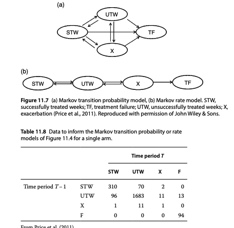
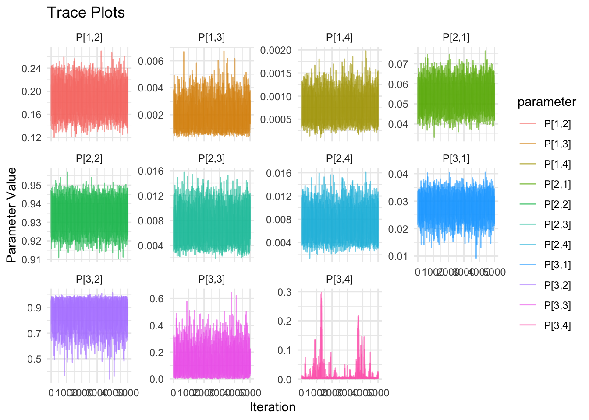
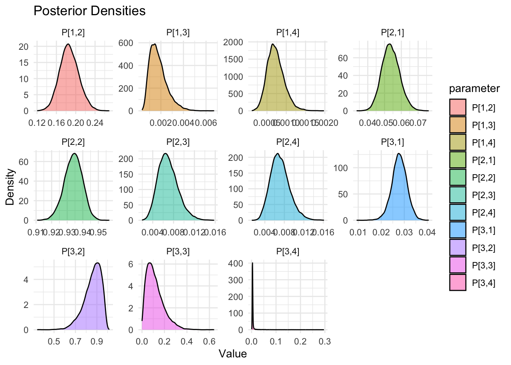

Show the code
library(rjags)
library(ggplot2)
library(coda)
library(dplyr)
library(tidyr)This document implents a JAGS model for the 4-state network meta-analysis model described in the book Network Meta-Analysis for Decision-Making by Sofia Dias, A.E. Ades, Nicky J. Welton, Jeroen P. Jansen, and Alexander J. Sutton.

The model relies on symbolic solutions to the Kolmogorov forward equations for the transition probabilities for the 4-state model which have previously been derived using the symbolic computations capabilities of the Julia language. The code contains some diagnostic features to check that the estimated process rates for each row of the generator matrix for the continuous-time chain sum to 0.
library(rjags)
library(ggplot2)
library(coda)
library(dplyr)
library(tidyr)model_string <- "
model {
# Time between transitions (can be fixed or modeled)
u <- 1
# Transition probabilities p[i,j] derived from symbolic exp(tQ)
# ---------- P[1,1] ----------
term0_11 <- 1
term1_11 <- -u * lambda12
term2a_11 <- u * u * lambda12 * lambda12
term2b_11 <- u * u * lambda12 * lambda21
term2_11 <- 0.5 * (term2a_11 + term2b_11)
term3a_11 <- -0.5 * u * (term2a_11 + term2b_11) * lambda12
term3b1_11 <- -u * u * lambda12 * lambda21
term3b2_11 <- u * u * (-lambda21 - lambda23 - lambda24) * lambda21
term3b_11 <- 0.5 * u * (term3b1_11 + term3b2_11) * lambda12
term3_11 <- (1/3) * (term3a_11 + term3b_11)
sub4a_11 <- 0.5 * u * u * u * lambda21 * lambda23 * lambda32
sub4b_11 <- 0.5 * u * (term2a_11 + term2b_11) * lambda21
sub4c_11 <- 0.5 * u * (term3b1_11 + term3b2_11) * (-lambda21 - lambda23 - lambda24)
inner4a_11 <- (1/3) * u * (sub4a_11 + sub4b_11 + sub4c_11) * lambda12
sub4d_11 <- -0.5 * u * (term2a_11 + term2b_11) * lambda12
sub4e_11 <- 0.5 * u * (term3b1_11 + term3b2_11) * lambda12
inner4b_11 <- -(1/3) * u * (sub4d_11 + sub4e_11) * lambda12
term4_11 <- (1/4) * (inner4a_11 + inner4b_11)
P[1,1] <- term0_11 + term1_11 + term2_11 + term3_11 + term4_11
# ---------- P[1,2] ----------
term1_12 <- u * lambda12
term2a_12 <- -u * u * lambda12 * lambda12
term2b_12 <- u * u * lambda12 * (-lambda21 - lambda23 - lambda24)
term2_12 <- 0.5 * (term2a_12 + term2b_12)
term3a_12 <- -0.5 * u * (term2a_12 + term2b_12) * lambda12
term3b_12 <- 0.5 * u * (
u * u * lambda12 * lambda21 +
u * u * (-lambda21 - lambda23 - lambda24) * (-lambda21 - lambda23 - lambda24) +
u * u * lambda23 * lambda32
) * lambda12
term3_12 <- (1/3) * (term3a_12 + term3b_12)
sub4a_12 <- -0.5 * u * (term2a_12 + term2b_12) * lambda12
sub4b_12 <- 0.5 * u * (
u * u * lambda12 * lambda21 +
u * u * (-lambda21 - lambda23 - lambda24) * (-lambda21 - lambda23 - lambda24) +
u * u * lambda23 * lambda32
) * lambda12
inner4a_12 <- -(1/3) * u * (sub4a_12 + sub4b_12) * lambda12
inner4b_12 <- (1/3) * u * (
0.5 * u * (term2a_12 + term2b_12) * lambda21 +
0.5 * u * (
u * u * lambda12 * lambda21 +
u * u * (-lambda21 - lambda23 - lambda24) * (-lambda21 - lambda23 - lambda24) +
u * u * lambda23 * lambda32
) * (-lambda21 - lambda23 - lambda24) +
0.5 * u * (
u * u * (-lambda21 - lambda23 - lambda24) * lambda32 +
u * u * lambda32 * (-lambda32 - lambda34)
) * lambda23
) * lambda12
term4_12 <- (1/4) * (inner4a_12 + inner4b_12)
P[1,2] <- term1_12 + term2_12 + term3_12 + term4_12
# ---------- P[1,3] ----------
term2_13 <- 0.5 * u * u * lambda12 * lambda23
term3a_13 <- -0.5 * u * u * u * lambda12 * lambda12 * lambda23
term3b_13 <- 0.5 * u * (
u * u * (-lambda21 - lambda23 - lambda24) * lambda23 +
u * u * lambda23 * (-lambda32 - lambda34)
) * lambda12
term3_13 <- (1/3) * (term3a_13 + term3b_13)
inner4a_13 <- -0.5 * u * (term3a_13 + term3b_13) * lambda12
inner4b_13 <- (1/3) * u * (
0.5 * u * u * u * lambda12 * lambda21 * lambda23 +
0.5 * u * (
u * u * (-lambda21 - lambda23 - lambda24) * lambda23 +
u * u * lambda23 * (-lambda32 - lambda34)
) * (-lambda21 - lambda23 - lambda24) +
0.5 * u * (
u * u * lambda23 * lambda32 +
u * u * (-lambda32 - lambda34) * (-lambda32 - lambda34)
) * lambda23
) * lambda12
term4_13 <- (1/4) * (inner4a_13 + inner4b_13)
P[1,3] <- term2_13 + term3_13 + term4_13
# ---------- P[1,4] ----------
term2_14 <- 0.5 * u * u * lambda12 * lambda24
term3a_14 <- -0.5 * u * u * u * lambda12 * lambda12 * lambda24
term3b_14 <- 0.5 * u * (
u * u * (-lambda21 - lambda23 - lambda24) * lambda24 +
u * u * lambda23 * lambda34
) * lambda12
term3_14 <- (1/3) * (term3a_14 + term3b_14)
inner4a_14 <- -0.5 * u * (term3a_14 + term3b_14) * lambda12
inner4b_14 <- (1/3) * u * (
0.5 * u * u * u * lambda12 * lambda21 * lambda24 +
0.5 * u * (
u * u * (-lambda21 - lambda23 - lambda24) * lambda24 +
u * u * lambda23 * lambda34
) * (-lambda21 - lambda23 - lambda24) +
0.5 * u * (
u * u * lambda24 * lambda32 +
u * u * (-lambda32 - lambda34) * lambda34
) * lambda23
) * lambda12
term4_14 <- (1/4) * (inner4a_14 + inner4b_14)
P[1,4] <- term2_14 + term3_14 + term4_14
# ---------- P[2,1] ----------
# First-order term
term1_21 <- u * lambda21
# Second-order
term2a_21 <- -u * u * lambda12 * lambda21
term2b_21 <- u * u * (-lambda21 - lambda23 - lambda24) * lambda21
term2_21 <- 0.5 * (term2a_21 + term2b_21)
# Third-order
term3a_21 <- 0.5 * u * u * u * lambda21 * lambda23 * lambda32
term3b_21 <- 0.5 * u * (u * u * lambda12 * lambda12 + u * u * lambda12 * lambda21) * lambda21
term3c_21 <- 0.5 * u * (-u * u * lambda12 * lambda21 + u * u * (-lambda21 - lambda23 - lambda24) * lambda21) * (-lambda21 - lambda23 - lambda24)
term3_21 <- (1/3) * (term3a_21 + term3b_21 + term3c_21)
# Fourth-order
inner4a_21 <- (1/3) * u * (term3a_21 + term3b_21 + term3c_21) * (-lambda21 - lambda23 - lambda24)
inner4b_21 <- (1/3) * u * (
0.5 * u * u * u * lambda21 * lambda32 * (-lambda32 - lambda34) +
0.5 * u * (-u * u * lambda12 * lambda21 + u * u * (-lambda21 - lambda23 - lambda24) * lambda21) * lambda32
) * lambda23
inner4c_21 <- (1/3) * u * (
-0.5 * u * (u * u * lambda12 * lambda12 + u * u * lambda12 * lambda21) * lambda12 +
0.5 * u * (-u * u * lambda12 * lambda21 + u * u * (-lambda21 - lambda23 - lambda24) * lambda21) * lambda12
) * lambda21
term4_21 <- (1/4) * (inner4a_21 + inner4b_21 + inner4c_21)
# Fifth-order
sub5a_21 <- (1/3) * u * (
term3a_21 + term3b_21 + term3c_21
) * lambda12
sub5b_21 <- (1/3) * u * (
-0.5 * u * (u * u * lambda12 * lambda12 + u * u * lambda12 * lambda21) * lambda12 +
0.5 * u * (-u * u * lambda12 * lambda21 + u * u * (-lambda21 - lambda23 - lambda24) * lambda21) * lambda12
) * lambda12
inner5a_21 <- (1/4) * u * (sub5a_21 - sub5b_21) * lambda21
inner5b_21 <- (1/4) * u * (inner4a_21 + inner4b_21 + inner4c_21) * (-lambda21 - lambda23 - lambda24)
inner5c_21 <- (1/4) * u * (
(1/3) * u * (term3a_21 + term3b_21 + term3c_21) * lambda32 +
(1/3) * u * (
0.5 * u * u * u * lambda21 * lambda32 * (-lambda32 - lambda34) +
0.5 * u * (-u * u * lambda12 * lambda21 + u * u * (-lambda21 - lambda23 - lambda24) * lambda21) * lambda32
) * (-lambda32 - lambda34)
) * lambda23
term5_21 <- (1/5) * (inner5a_21 + inner5b_21 + inner5c_21)
P[2,1] <- term1_21 + term2_21 + term3_21 + term4_21 + term5_21
# ---------- P[2,2] ----------
term0_22 <- 1
term1_22 <- u * (-lambda21 - lambda23 - lambda24)
term2a_22 <- u * u * lambda12 * lambda21
term2b_22 <- u * u * (-lambda21 - lambda23 - lambda24) * (-lambda21 - lambda23 - lambda24)
term2c_22 <- u * u * lambda23 * lambda32
term2_22 <- 0.5 * (term2a_22 + term2b_22 + term2c_22)
term3a_22 <- 0.5 * u * (-u * u * lambda12 * lambda12 + u * u * lambda12 * (-lambda21 - lambda23 - lambda24)) * lambda21
term3b_22 <- 0.5 * u * (term2a_22 + term2b_22 + term2c_22) * (-lambda21 - lambda23 - lambda24)
term3c_22 <- 0.5 * u * (
u * u * (-lambda21 - lambda23 - lambda24) * lambda32 +
u * u * lambda32 * (-lambda32 - lambda34)
) * lambda23
term3_22 <- (1/3) * (term3a_22 + term3b_22 + term3c_22)
inner4a_22 <- (1/3) * u * (
-0.5 * u * (-u * u * lambda12 * lambda12 + u * u * lambda12 * (-lambda21 - lambda23 - lambda24)) * lambda12 +
0.5 * u * (term2a_22 + term2b_22 + term2c_22) * lambda12
) * lambda21
inner4b_22 <- (1/3) * u * (term3a_22 + term3b_22 + term3c_22) * (-lambda21 - lambda23 - lambda24)
inner4c_22 <- (1/3) * u * (
0.5 * u * term2_22 * lambda32 +
0.5 * u * (
u * u * (-lambda21 - lambda23 - lambda24) * lambda32 +
u * u * lambda32 * (-lambda32 - lambda34)
) * (-lambda32 - lambda34)
) * lambda23
term4_22 <- (1/4) * (inner4a_22 + inner4b_22 + inner4c_22)
term5a_22 <- (1/4) * u * (
- (1/3) * u * (inner4a_22) * lambda12 +
(1/3) * u * (term3a_22 + term3b_22 + term3c_22) * lambda12
) * lambda21
term5b_22 <- (1/4) * u * (inner4a_22 + inner4b_22 + inner4c_22) * (-lambda21 - lambda23 - lambda24)
term5c_22 <- (1/4) * u * (
(1/3) * u * term3_22 * lambda32 +
(1/3) * u * (
term2_22 * lambda32 +
(
u * u * (-lambda21 - lambda23 - lambda24) * lambda32 +
u * u * lambda32 * (-lambda32 - lambda34)
) * (-lambda32 - lambda34)
)
) * lambda23
term5_22 <- (1/5) * (term5a_22 + term5b_22 + term5c_22)
P[2,2] <- term0_22 + term1_22 + term2_22 + term3_22 + term4_22 + term5_22
# ---------- P[2,3] ----------
term1_23 <- u * lambda23
term2a_23 <- u * u * (-lambda21 - lambda23 - lambda24) * lambda23
term2b_23 <- u * u * lambda23 * (-lambda32 - lambda34)
term2_23 <- 0.5 * (term2a_23 + term2b_23)
term3a_23 <- 0.5 * u * u * u * lambda12 * lambda21 * lambda23
term3b_23 <- 0.5 * u * (term2a_23 + term2b_23) * (-lambda21 - lambda23 - lambda24)
term3c_23 <- 0.5 * u * (
u * u * lambda23 * lambda32 +
u * u * (-lambda32 - lambda34) * (-lambda32 - lambda34)
) * lambda23
term3_23 <- (1/3) * (term3a_23 + term3b_23 + term3c_23)
inner4a_23 <- (1/3) * u * (
-0.5 * u * u * u * lambda12 * lambda12 * lambda23 +
0.5 * u * (term2a_23 + term2b_23) * lambda12
) * lambda21
inner4b_23 <- (1/3) * u * (term3a_23 + term3b_23 + term3c_23) * (-lambda21 - lambda23 - lambda24)
inner4c_23 <- (1/3) * u * (
0.5 * u * (term2a_23 + term2b_23) * lambda32 +
0.5 * u * (
u * u * lambda23 * lambda32 +
u * u * (-lambda32 - lambda34) * (-lambda32 - lambda34)
) * (-lambda32 - lambda34)
) * lambda23
term4_23 <- (1/4) * (inner4a_23 + inner4b_23 + inner4c_23)
term5a_23 <- (1/4) * u * (
- (1/3) * u * (
-0.5 * u * u * u * lambda12 * lambda12 * lambda23 +
0.5 * u * (term2a_23 + term2b_23) * lambda12
) * lambda12 +
(1/3) * u * (term3a_23 + term3b_23 + term3c_23) * lambda12
) * lambda21
term5b_23 <- (1/4) * u * (inner4a_23 + inner4b_23 + inner4c_23) * (-lambda21 - lambda23 - lambda24)
term5c_23 <- (1/4) * u * (
(1/3) * u * term3_23 * lambda32 +
(1/3) * u * (
0.5 * u * (term2a_23 + term2b_23) * lambda32 +
0.5 * u * (
u * u * lambda23 * lambda32 +
u * u * (-lambda32 - lambda34) * (-lambda32 - lambda34)
) * (-lambda32 - lambda34)
)
) * lambda23
term5_23 <- (1/5) * (term5a_23 + term5b_23 + term5c_23)
P[2,3] <- term1_23 + term2_23 + term3_23 + term4_23 + term5_23
# ---------- P[2,4] ----------
# ---------- P[2,4] ----------
# First-order term
term1_24 <- u * lambda24
# Second-order terms
term2a_24 <- u * u * (-lambda21 - lambda23 - lambda24) * lambda24
term2b_24 <- u * u * lambda23 * lambda34
term2_24 <- 0.5 * (term2a_24 + term2b_24)
# Third-order terms
term3a_24 <- 0.5 * u * u * u * lambda12 * lambda21 * lambda24
term3b_24 <- 0.5 * u * (term2a_24 + term2b_24) * (-lambda21 - lambda23 - lambda24)
term3c_24 <- 0.5 * u * (
u * u * lambda24 * lambda32 +
u * u * (-lambda32 - lambda34) * lambda34
) * lambda23
term3_24 <- (1/3) * (term3a_24 + term3b_24 + term3c_24)
# Fourth-order terms
inner4a_24 <- (1/3) * u * (
-0.5 * u * u * u * lambda12 * lambda12 * lambda24 +
0.5 * u * (term2a_24 + term2b_24) * lambda12
) * lambda21
inner4b_24 <- (1/3) * u * (term3a_24 + term3b_24 + term3c_24) * (-lambda21 - lambda23 - lambda24)
inner4c_24 <- (1/3) * u * (
0.5 * u * (term2a_24 + term2b_24) * lambda32 +
0.5 * u * (
u * u * lambda24 * lambda32 +
u * u * (-lambda32 - lambda34) * lambda34
) * (-lambda32 - lambda34)
) * lambda23
term4_24 <- (1/4) * (inner4a_24 + inner4b_24 + inner4c_24)
# Fifth-order terms
term5a_24 <- (1/4) * u * (
(1/3) * u * (
-0.5 * u * u * u * lambda12 * lambda12 * lambda24 +
0.5 * u * (term2a_24 + term2b_24) * lambda12
) * lambda12 +
(1/3) * u * (term3a_24 + term3b_24 + term3c_24) * lambda12
) * lambda21
term5b_24 <- (1/4) * u * (inner4a_24 + inner4b_24 + inner4c_24) * (-lambda21 - lambda23 - lambda24)
term5c_24 <- (1/4) * u * (
(1/3) * u * (term3a_24 + term3b_24 + term3c_24) * lambda32 +
(1/3) * u * (
0.5 * u * (term2a_24 + term2b_24) * lambda32 +
0.5 * u * (
u * u * lambda24 * lambda32 +
u * u * (-lambda32 - lambda34) * lambda34
) * (-lambda32 - lambda34)
)
) * lambda23
term5_24 <- (1/5) * (term5a_24 + term5b_24 + term5c_24)
# Final assignment
P[2,4] <- term1_24 + term2_24 + term3_24 + term4_24 + term5_24
# ---------- P[3,1] ----------
# Second-order term
term2_31 <- 0.5 * u * u * lambda21 * lambda32
# Third-order terms
term3a_31 <- 0.5 * u * u * u * lambda21 * lambda32 * (-lambda32 - lambda34)
term3b_31 <- 0.5 * u * (
-u * u * lambda12 * lambda21 + u * u * (-lambda21 - lambda23 - lambda24) * lambda21
) * lambda32
term3_31 <- (1/3) * (term3a_31 + term3b_31)
# Fourth-order terms
sub4a1_31 <- 0.5 * u * u * u * lambda21 * lambda23 * lambda32
sub4a2_31 <- 0.5 * u * (u * u * lambda12 * lambda12 + u * u * lambda12 * lambda21) * lambda21
sub4a3_31 <- 0.5 * u * (
-u * u * lambda12 * lambda21 + u * u * (-lambda21 - lambda23 - lambda24) * lambda21
) * (-lambda21 - lambda23 - lambda24)
inner4a_31 <- (1/3) * u * (sub4a1_31 + sub4a2_31 + sub4a3_31) * lambda32
sub4b1_31 <- term3a_31
sub4b2_31 <- term3b_31
inner4b_31 <- (1/3) * u * (sub4b1_31 + sub4b2_31) * (-lambda32 - lambda34)
term4_31 <- (1/4) * (inner4a_31 + inner4b_31)
# Fifth-order terms
## Branch A
inner5a_31 <- (1/3) * u * (sub4a1_31 + sub4a2_31 + sub4a3_31) * (-lambda21 - lambda23 - lambda24)
inner5b_31 <- (1/3) * u * (sub4b1_31 + sub4b2_31) * lambda23
sub5a3a_31 <- -0.5 * u * (u * u * lambda12 * lambda12 + u * u * lambda12 * lambda21) * lambda12
sub5a3b_31 <- 0.5 * u * (
-u * u * lambda12 * lambda21 + u * u * (-lambda21 - lambda23 - lambda24) * lambda21
) * lambda12
inner5c_31 <- (1/3) * u * (sub5a3a_31 + sub5a3b_31) * lambda21
branchA_31 <- (1/4) * u * (inner5a_31 + inner5b_31 + inner5c_31) * lambda32
## Branch B
inner5d_31 <- (1/3) * u * (sub4a1_31 + sub4a2_31 + sub4a3_31) * lambda32
inner5e_31 <- (1/3) * u * (sub4b1_31 + sub4b2_31) * (-lambda32 - lambda34)
branchB_31 <- (1/4) * u * (inner5d_31 + inner5e_31) * (-lambda32 - lambda34)
term5_31 <- (1/5) * (branchA_31 + branchB_31)
P[3,1] <- term2_31 + term3_31 + term4_31 + term5_31
# ---------- P[3,2] ----------
# First-order term
term1_32 <- u * lambda32
# Second-order terms
term2a_32 <- u * u * (-lambda21 - lambda23 - lambda24) * lambda32
term2b_32 <- u * u * lambda32 * (-lambda32 - lambda34)
term2_32 <- 0.5 * (term2a_32 + term2b_32)
# Third-order terms
term3a_32 <- 0.5 * u * (
u * u * lambda12 * lambda21 +
u * u * (-lambda21 - lambda23 - lambda24) * (-lambda21 - lambda23 - lambda24) +
u * u * lambda23 * lambda32
) * lambda32
term3b_32 <- 0.5 * u * (term2a_32 + term2b_32) * (-lambda32 - lambda34)
term3_32 <- (1/3) * (term3a_32 + term3b_32)
# Fourth-order terms
sub4a1_32 <- 0.5 * u * (
-u * u * lambda12 * lambda12 +
u * u * lambda12 * (-lambda21 - lambda23 - lambda24)
) * lambda21
sub4a2_32 <- term3a_32
sub4a3_32 <- term2a_32 + term2b_32
inner4a_32 <- (1/3) * u * (
sub4a1_32 + sub4a2_32 + 0.5 * u * sub4a3_32 * lambda23
) * lambda32
inner4b_32 <- (1/3) * u * (term3a_32 + term3b_32) * (-lambda32 - lambda34)
term4_32 <- (1/4) * (inner4a_32 + inner4b_32)
# Fifth-order terms
## Branch A
sub5a1_32 <- -0.5 * u * (
-u * u * lambda12 * lambda12 +
u * u * lambda12 * (-lambda21 - lambda23 - lambda24)
) * lambda12
sub5a2_32 <- term3a_32
inner5a_32 <- (1/3) * u * (sub5a1_32 + sub5a2_32) * lambda21
inner5b_32 <- (1/3) * u * (
sub5a1_32 * lambda21 +
term3a_32 * (-lambda21 - lambda23 - lambda24) +
0.5 * u * sub4a3_32 * lambda23
) * (-lambda21 - lambda23 - lambda24)
inner5c_32 <- (1/3) * u * (term3a_32 + term3b_32) * lambda23
branchA_32 <- (1/4) * u * (inner5a_32 + inner5b_32 + inner5c_32) * lambda32
## Branch B
inner5d_32 <- (1/3) * u * (
sub5a1_32 * lambda21 +
term3a_32 * (-lambda21 - lambda23 - lambda24) +
0.5 * u * sub4a3_32 * lambda23
) * lambda32
inner5e_32 <- (1/3) * u * (term3a_32 + term3b_32) * (-lambda32 - lambda34)
branchB_32 <- (1/4) * u * (inner5d_32 + inner5e_32) * (-lambda32 - lambda34)
term5_32 <- (1/5) * (branchA_32 + branchB_32)
P[3,2] <- term1_32 + term2_32 + term3_32 + term4_32 + term5_32
# ---------- P[3,3] ----------
# Zeroth-order term
term0_33 <- 1
# First-order term
term1_33 <- u * (-lambda32 - lambda34)
# Second-order terms
term2a_33 <- u * u * lambda23 * lambda32
term2b_33 <- u * u * (-lambda32 - lambda34) * (-lambda32 - lambda34)
term2_33 <- 0.5 * (term2a_33 + term2b_33)
# Third-order terms
term3a_33 <- 0.5 * u * (
u * u * (-lambda21 - lambda23 - lambda24) * lambda23 +
u * u * lambda23 * (-lambda32 - lambda34)
) * lambda32
term3b_33 <- 0.5 * u * (term2a_33 + term2b_33) * (-lambda32 - lambda34)
term3_33 <- (1/3) * (term3a_33 + term3b_33)
# Fourth-order terms
inner4a_33 <- (1/3) * u * (
0.5 * u * u * u * lambda12 * lambda21 * lambda23 +
0.5 * u * (
u * u * (-lambda21 - lambda23 - lambda24) * lambda23 +
u * u * lambda23 * (-lambda32 - lambda34)
) * (-lambda21 - lambda23 - lambda24) +
0.5 * u * (
u * u * lambda23 * lambda32 +
u * u * (-lambda32 - lambda34) * (-lambda32 - lambda34)
) * lambda23
) * lambda32
inner4b_33 <- (1/3) * u * (
0.5 * u * (
u * u * (-lambda21 - lambda23 - lambda24) * lambda23 +
u * u * lambda23 * (-lambda32 - lambda34)
) * lambda32 +
0.5 * u * (term2a_33 + term2b_33) * (-lambda32 - lambda34)
) * (-lambda32 - lambda34)
term4_33 <- (1/4) * (inner4a_33 + inner4b_33)
# Fifth-order terms
term5a_33 <- (1/4) * u * (
(1/3) * u * (
-0.5 * u * u * u * lambda12 * lambda12 * lambda23 +
0.5 * u * (
u * u * (-lambda21 - lambda23 - lambda24) * lambda23 +
u * u * lambda23 * (-lambda32 - lambda34)
) * lambda12
) * lambda21 +
(1/3) * u * inner4a_33 * (-lambda21 - lambda23 - lambda24) +
(1/3) * u * (
0.5 * u * (
u * u * (-lambda21 - lambda23 - lambda24) * lambda23 +
u * u * lambda23 * (-lambda32 - lambda34)
) * lambda32 +
0.5 * u * (term2a_33 + term2b_33) * (-lambda32 - lambda34)
) * lambda23
) * lambda32
term5b_33 <- (1/4) * u * (
inner4a_33 +
inner4b_33
) * (-lambda32 - lambda34)
term5_33 <- (1/5) * (term5a_33 + term5b_33)
P[3,3] <- term0_33 + term1_33 + term2_33 + term3_33 + term4_33 + term5_33
# ---------- P[3,4] ----------
# First-order term
term1_34 <- u * lambda34
# Second-order terms
term2a_34 <- u * u * lambda24 * lambda32
term2b_34 <- u * u * (-lambda32 - lambda34) * lambda34
term2_34 <- 0.5 * (term2a_34 + term2b_34)
# Third-order terms
term3a_34 <- 0.5 * u * (
u * u * (-lambda21 - lambda23 - lambda24) * lambda24 +
u * u * lambda23 * lambda34
) * lambda32
term3b_34 <- 0.5 * u * (term2a_34 + term2b_34) * (-lambda32 - lambda34)
term3_34 <- (1/3) * (term3a_34 + term3b_34)
# Fourth-order terms
inner4a_34 <- (1/3) * u * (
0.5 * u * u * u * lambda12 * lambda21 * lambda24 +
0.5 * u * (
u * u * (-lambda21 - lambda23 - lambda24) * lambda24 +
u * u * lambda23 * lambda34
) * (-lambda21 - lambda23 - lambda24) +
0.5 * u * (
u * u * lambda24 * lambda32 +
u * u * (-lambda32 - lambda34) * lambda34
) * lambda23
) * lambda32
inner4b_34 <- (1/3) * u * (
0.5 * u * (
u * u * (-lambda21 - lambda23 - lambda24) * lambda24 +
u * u * lambda23 * lambda34
) * lambda32 +
0.5 * u * (term2a_34 + term2b_34) * (-lambda32 - lambda34)
) * (-lambda32 - lambda34)
term4_34 <- (1/4) * (inner4a_34 + inner4b_34)
# Fifth-order terms
term5a_34 <- (1/4) * u * (
(1/3) * u * (
-0.5 * u * u * u * lambda12 * lambda12 * lambda24 +
0.5 * u * (
u * u * (-lambda21 - lambda23 - lambda24) * lambda24 +
u * u * lambda23 * lambda34
) * lambda12
) * lambda21 +
(1/3) * u * inner4a_34 * (-lambda21 - lambda23 - lambda24) +
(1/3) * u * (
0.5 * u * (
u * u * (-lambda21 - lambda23 - lambda24) * lambda24 +
u * u * lambda23 * lambda34
) * lambda32 +
0.5 * u * (
u * u * lambda24 * lambda32 +
u * u * (-lambda32 - lambda34) * lambda34
) * (-lambda32 - lambda34)
) * lambda23
) * lambda32
term5b_34 <- (1/4) * u * (
inner4a_34 +
inner4b_34
) * (-lambda32 - lambda34)
term5_34 <- (1/5) * (term5a_34 + term5b_34)
P[3,4] <- term1_34 + term2_34 + term3_34 + term4_34 + term5_34
# ---------- P[4,j] ----------
P[4,1] <- 0
P[4,2] <- 0
P[4,3] <- 0
P[4,4] <- 1
# For stability
row1_sum <- P[1,1] + P[1,2] + P[1,3] + P[1,4]
p[1,1] <- max(max(P[1,1] / row2_sum, 0), 0.000001)
p[1,2] <- max(max(P[1,2] / row2_sum, 0), 0.000001)
p[1,3] <- max(max(P[1,3] / row2_sum, 0), 0.000001)
p[1,4] <- max(max(P[1,4] / row2_sum, 0), 0.000001)
r[1,1:4] ~ dmulti(p[1,1:4], n[1])
# After P[2,j]
row2_sum <- P[2,1] + P[2,2] + P[2,3] + P[2,4]
p[2,1] <- max(max(P[2,1] / row2_sum, 0), 0.000001)
p[2,2] <- max(max(P[2,2] / row2_sum, 0), 0.000001)
p[2,3] <- max(max(P[2,3] / row2_sum, 0), 0.000001)
p[2,4] <- max(max(P[2,4] / row2_sum, 0), 0.000001)
r[2,1:4] ~ dmulti(p[2,1:4], n[2])
# # After P[3,j]
row3_sum <- P[3,1] + P[3,2] + P[3,3] + P[3,4]
# p[3,1] <- max(P[3,1] / row3_sum, 0)
# p[3,2] <- max(P[3,2] / row3_sum, 0)
# p[3,3] <- max(P[3,3] / row3_sum, 0)
# p[3,4] <- max(P[3,4] / row3_sum, 0)
p[3,1] <- max(max(P[3,1] / row3_sum, 0), 0.000001)
p[3,2] <- max(max(P[3,2] / row3_sum, 0), 0.000001)
p[3,3] <- max(max(P[3,3] / row3_sum, 0), 0.000001)
p[3,4] <- max(max(P[3,4] / row3_sum, 0), 0.000001)
r[3,1:4] ~ dmulti(p[3,1:4], n[3])
# After P[4,j]
for (j in 1:4) {
p[4,j] <- P[4,j]
}
r[4,1:4] ~ dmulti(p[4,1:4], n[4])
# Priors for transition rates
lambda12 ~ dgamma(0.1, 0.1)
lambda13 ~ dgamma(0.1, 0.1)
lambda14 ~ dgamma(0.1, 0.1)
lambda11 <- -(lambda12 + lambda13 + lambda14)
# Priors from state 2
lambda21 ~ dgamma(0.1, 0.1)
lambda23 ~ dgamma(0.1, 0.1)
lambda24 ~ dgamma(0.1, 0.1)
lambda22 <- -(lambda21 + lambda23 + lambda24)
# Priors from state 3
lambda31 ~ dgamma(0.1, 0.1)
lambda32 ~ dgamma(0.1, 0.1)
lambda34 ~ dgamma(0.1, 0.1)
lambda33 <- -(lambda31 + lambda32 + lambda34)
# Priors from state 4
# lambda41 <- 0
# lambda42 <- 0
# lambda43 <- 0
# Priors for state r
lambda41 ~ dgamma(0.1, 0.1)
lambda42 ~ dgamma(0.1, 0.1)
lambda43 ~ dgamma(0.1, 0.1)
}
"
writeLines(model_string, "4state_78.bug")# Initialize model
r <- matrix(c(310,70,2,0,
96, 1683, 11, 13,
1, 11, 1, 0,
0, 0, 0, 94), nrow=4, byrow=TRUE)
n <- rowSums(r)
data_list <- list(
r = r,
n = n)
inits <- list(lambda11 = 0,
lambda12 = 0.1,
lambda13 = 0.1,
lambda14 = 0.1,
lambda21 = 0.1,
lambda22 = 0,
lambda23 = 0.1,
lambda24 = 0.1,
lambda31 = 0.1,
lambda32 = 0.1,
lambda33 = 0,
lambda34 = 0.1,
lambda41 = 0,
lambda42 = 0,
lambda43 = 0,
lambda44 = 0)
parameters.to.save = c("lambda11", "lambda12", "lambda13", "lambda14",
"lambda21", "lambda22","lambda23", "lambda24",
"lambda31", "lambda32", "lambda33", "lambda34",
"lambda41", "lambda42", "lambda43", "lambda44",
"P[1,1]", "P[1,2]", "P[1,3]", "P[1,4]",
"P[2,1]", "P[2,2]", "P[2,3]", "P[2,4]",
"P[3,1]", "P[3,2]", "P[3,3]", "P[3,4]",
"P[4,1]", "P[4,2]", "P[4,3]", "P[4,4]",
"p[1,1]", "p[1,2]", "p[1,3]", "p[1,4]",
"p[2,1]", "p[2,2]", "p[2,3]", "p[2,4]",
"p[3,1]", "p[3,2]", "p[3,3]", "p[3,4]",
"p[4,1]", "p[4,2]", "p[4,3]", "p[4,4]"
)
jags_model_78 <- jags.model(file = "4state_78.bug",
data = data_list,
n.chains = 3,
n.adapt = 1000)Compiling model graph
Resolving undeclared variables
Allocating nodes
Graph information:
Observed stochastic nodes: 4
Unobserved stochastic nodes: 12
Total graph size: 323
Initializing model# Burn-in
update(jags_model_78, 1000)This code uses the coda.samples function to draw samples from the JAGS model. The number of iterations is set to 5000, which can be adjusted based on convergence diagnostics and model complexity.
samples <- coda.samples(jags_model_78,
variable.names = c(
"lambda11", "lambda12", "lambda13", "lambda14",
"lambda21", "lambda22","lambda23", "lambda24",
"lambda31", "lambda32", "lambda33", "lambda34",
"lambda41", "lambda42", "lambda43", "lambda44",
"P[1,1]", "P[1,2]", "P[1,3]", "P[1,4]",
"P[2,1]", "P[2,2]", "P[2,3]", "P[2,4]",
"P[3,1]", "P[3,2]", "P[3,3]", "P[3,4]",
"P[4,1]", "P[4,2]", "P[4,3]", "P[4,4]",
"p[1,1]", "p[1,2]", "p[1,3]", "p[1,4]",
"p[2,1]", "p[2,2]", "p[2,3]", "p[2,4]",
"p[3,1]", "p[3,2]", "p[3,3]", "p[3,4]",
"p[4,1]", "p[4,2]", "p[4,3]", "p[4,4]"
),
n.iter = 5000
)This code constructs, P, the matrix of tranistion probabilities. Prints out P and the row sums of P. Since P is a stochastic matrix, the row sums should be 1.
smry <- summary(samples)
smry_df <- as.data.frame(smry[1])
names(smry_df) <- c("Mean", "SD", "Naive_SE", "Time_Series_SE")
P <- matrix(smry_df$Mean[1:16], nrow = 4, ncol = 4, byrow = TRUE)
P [,1] [,2] [,3] [,4]
[1,] 0.81100911 0.1865473 0.001775578 0.000725876
[2,] 0.05370363 0.9338980 0.006941851 0.007125434
[3,] 0.02781451 0.8589393 0.116416436 0.008317802
[4,] 0.00000000 0.0000000 0.000000000 1.000000000rowsum_P <- rowSums(P)
rowsum_P[1] 1.000058 1.001669 1.011488 1.000000This code constructs the Generator matrix for the Markov, which contains the process rates, lambda. Rows of the generator matrix should sum to 0.
Lambda <- matrix(smry_df$Mean[17:32], nrow = 4, ncol = 4, byrow = TRUE)
Lambda [,1] [,2] [,3] [,4]
[1,] -2.20629262 0.2168604 1.02615164 0.963280604
[2,] 0.06222477 -0.0947738 0.02523112 0.007317905
[3,] 1.04075478 1.8291371 -2.87971971 0.009827838
[4,] 0.98223691 1.0447866 0.97197040 0.809658929cat("\n row sums:")
row sums:rowsum_p <- rowSums(Lambda)
rowsum_p[1] 8.326673e-17 -4.336809e-18 5.377643e-17 3.808653e+00This code constructs the matrix p of normalized transition probabilities matrix. These were computed by JAGS as a check on the stabiliy of the model. P and p should agree fairly closely.
p <- matrix(smry_df$Mean[29:44], nrow = 4, ncol = 4, byrow = TRUE)
p [,1] [,2] [,3] [,4]
[1,] 0.9822369 1.044786566 0.9719703987 0.80965893
[2,] 0.1862373 0.001771873 0.0007246697 0.05361404
[3,] 0.9323429 0.006929490 0.0071135760 0.02749148
[4,] 0.8487920 0.115487733 0.0082287415 0.00000000rowsum_p <- rowSums(P)
rowsum_p[1] 1.000058 1.001669 1.011488 1.000000This code sets up for plotting MCMC diagnostics.
# Convert JAGS samples to a data frame
samples_df <- as.data.frame(as.mcmc(do.call(rbind, samples)))
# Optional: print a few raw samples
cat("\n Transition Probabilities:\n")
Transition Probabilities:round(head(samples_df[,1:16]),3) P[1,1] P[1,2] P[1,3] P[1,4] P[2,1] P[2,2] P[2,3] P[2,4] P[3,1] P[3,2] P[3,3]
1 0.787 0.211 0.001 0.001 0.056 0.931 0.006 0.007 0.028 0.776 0.198
2 0.833 0.165 0.001 0.001 0.058 0.926 0.005 0.011 0.031 0.855 0.117
3 0.841 0.157 0.001 0.001 0.054 0.932 0.005 0.010 0.029 0.893 0.082
4 0.839 0.159 0.002 0.001 0.062 0.928 0.006 0.006 0.034 0.940 0.039
5 0.835 0.163 0.002 0.001 0.057 0.930 0.009 0.006 0.030 0.866 0.113
6 0.799 0.198 0.003 0.001 0.052 0.936 0.006 0.009 0.028 0.955 0.032
P[3,4] P[4,1] P[4,2] P[4,3] P[4,4]
1 0.003 0 0 0 1
2 0.006 0 0 0 1
3 0.005 0 0 0 1
4 0.003 0 0 0 1
5 0.003 0 0 0 1
6 0.005 0 0 0 1cat("\n Process Rates:\n")
Process Rates:round(head(samples_df[,17:31]),3) lambda11 lambda12 lambda13 lambda14 lambda21 lambda22 lambda23 lambda24
1 -0.249 0.249 0.000 0.000 0.066 -0.088 0.014 0.007
2 -24.595 0.189 0.000 24.406 0.067 -0.096 0.018 0.011
3 -4.749 0.178 1.763 2.807 0.062 -0.090 0.018 0.010
4 -2.572 0.183 2.390 0.000 0.071 -0.105 0.028 0.006
5 -0.438 0.187 0.246 0.005 0.065 -0.102 0.030 0.006
6 -0.232 0.232 0.000 0.000 0.060 -0.103 0.033 0.009
lambda31 lambda32 lambda33 lambda34 lambda41 lambda42 lambda43
1 0.000 1.558 -1.558 0 0.132 0.000 0.000
2 0.000 1.848 -1.848 0 0.000 9.192 0.001
3 0.000 1.961 -1.961 0 0.000 1.713 0.000
4 0.269 2.085 -2.354 0 0.000 4.784 9.312
5 0.011 1.868 -1.880 0 0.001 0.000 0.161
6 0.000 2.105 -2.105 0 0.000 13.303 0.001Plots of MCMC Traces.
# Convert mcmc.list to data frame and add chain + iteration info
df_long <- do.call(rbind, lapply(1:length(samples), function(chain) {
as.data.frame(samples[[chain]]) %>%
mutate(
iteration = row_number(),
chain = factor(chain)
)
})) %>%
pivot_longer(cols = -c(iteration, chain),
names_to = "parameter",
values_to = "value")Set and plot posterior distributions.
ggplot(df_long %>% filter(parameter %in% c("P{1,1]", "P[1,2]", "P[1,3]", "P[1,4]",
"P[2,1]", "P[2,2]", "P[2,3]", "P[2,4]",
"P[3,1]", "P[3,2]", "P[3,3]", "P[3,4]")),
aes(x = iteration, y = value, color = parameter)) +
geom_line(alpha = 0.6) +
facet_wrap(~parameter, scales = "free_y") +
labs(title = "Trace Plots", x = "Iteration", y = "Parameter Value") +
theme_minimal()
Plot Posterior distributions.
ggplot(df_long %>% filter(parameter %in% c("P{1,1]", "P[1,2]", "P[1,3]", "P[1,4]",
"P[2,1]", "P[2,2]", "P[2,3]", "P[2,4]",
"P[3,1]", "P[3,2]", "P[3,3]", "P[3,4]")),
aes(x = value, fill = parameter)) +
geom_density(alpha = 0.5) +
facet_wrap(~parameter, scales = "free") +
labs(title = "Posterior Densities", x = "Value", y = "Density") +
theme_minimal()